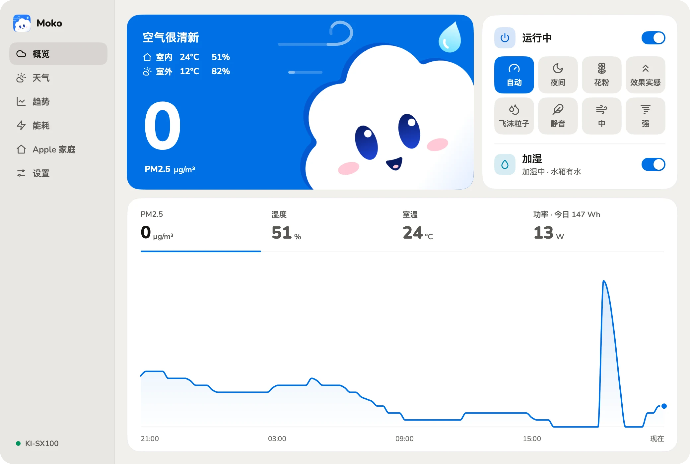
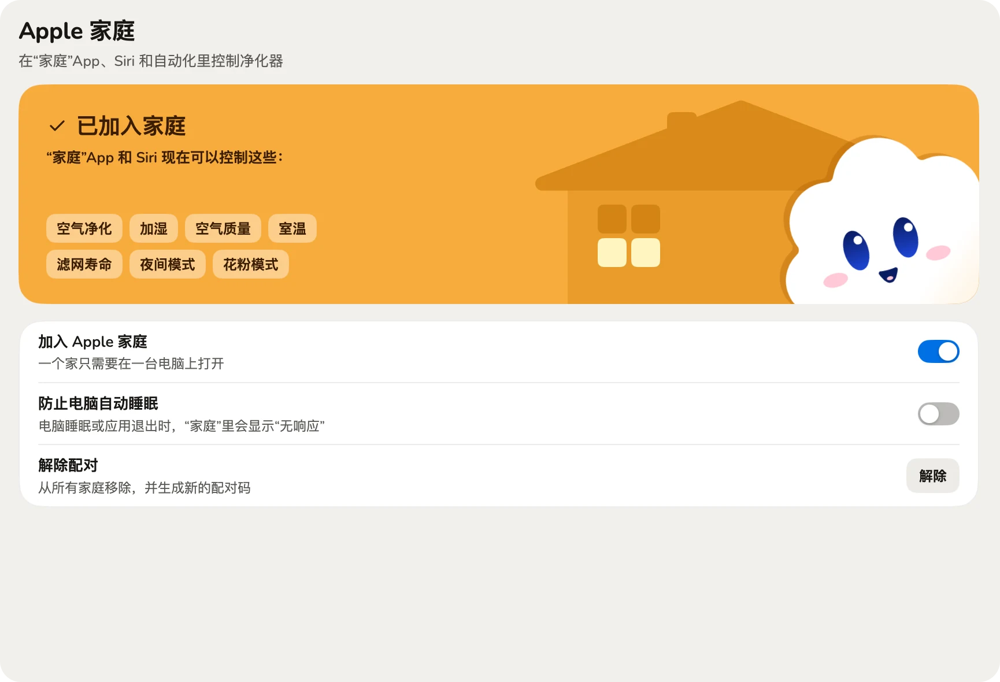
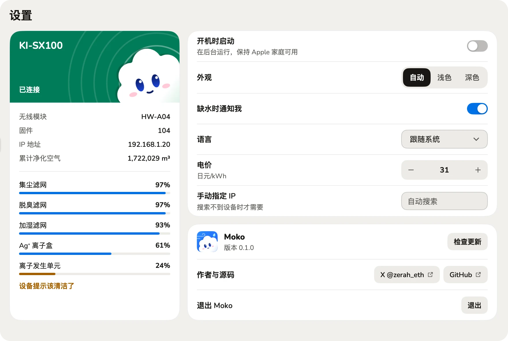

一个窗口，全都在。
PM2.5、室温、湿度和功率，八个运行模式和加湿。每次操作都回读确认，按下去就知道成没成。


接入 Apple 家庭
用“家庭”App 和 Siri 控制净化和加湿，查看空气质量和滤网寿命。

耗材一目了然
五项耗材的剩余寿命，和 COCORO AIR 显示的一致。
控制和读数只走局域网。
没有 Moko 服务器，不收集使用数据。
只有更新和天气会联网，天气可以关闭。